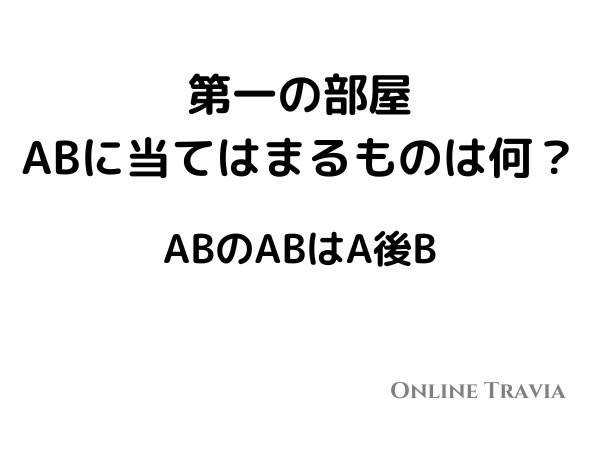
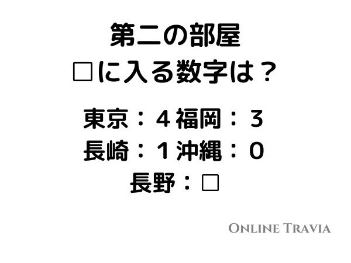
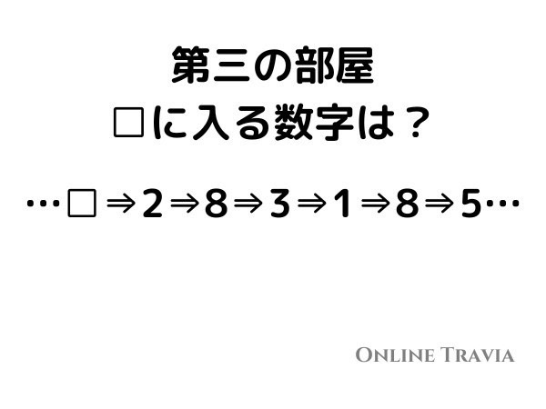
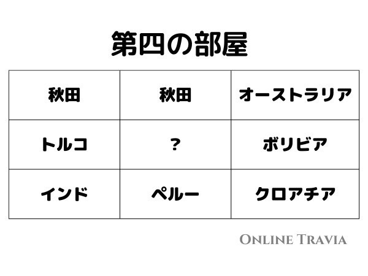
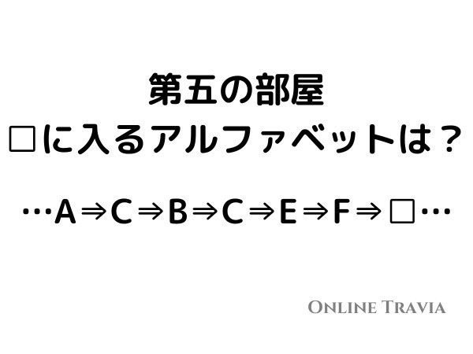

OnlineTraviaを開催しました！

このたび試験運用も兼ねて、管理しているLINEのオープンチャット上でオンラインでTraviaを開催しました！
オープンチャット「QuizKnock fan(クイズノック ファン)」
普段はここでは9~10時にクイズを開催しています。
以前も書いた通り、Traviaの最も特徴的なところは、知識を使った謎解きであるところです。なので当然いつものような単純な知識を問うクイズではありません。
今回はオンラインということで、オープンチャットの機能を活用した問題形式を考えました。
まず、今回の問題はクイズと謎解きがそれぞれ１問ずつセットで出題されます。
・第1問

「日本プロ野球最多記録となっている王貞治の通算本塁打数は何本でしょう？？」
オープンチャットはLINEから名前で検索できるようになっているため、クイズの問題の答えを入力するとその名前のオープンチャットが出るようになっています。
で、オープンチャットには質問によって鍵がかけられるようになっているため、ここで謎解きの答えを入力すると部屋に入れるようになっています。
そして部屋の中には次の問題が出題されているという流れを5問、約1時間半の期間で行いました。
・第2問

・第3問

・第4問

・第5問

結果としては最終問題をクリアしたのが3名という結果でした。
少々むずかしすぎた感じが否めないですが、概ね良かったのではないでしょうか。
今回はオンライン上での開催でしたが、もちろん現地に出向いての開催も計画中です。お楽しみに。